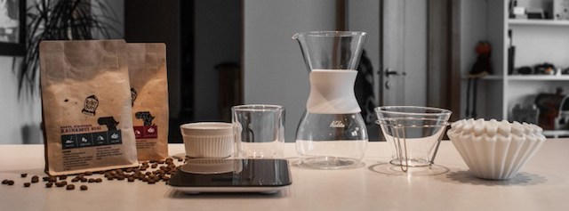
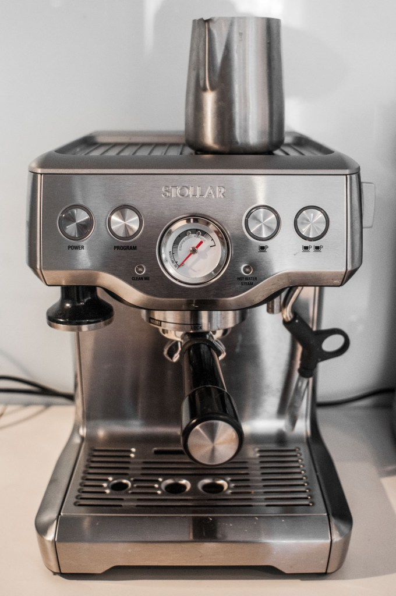
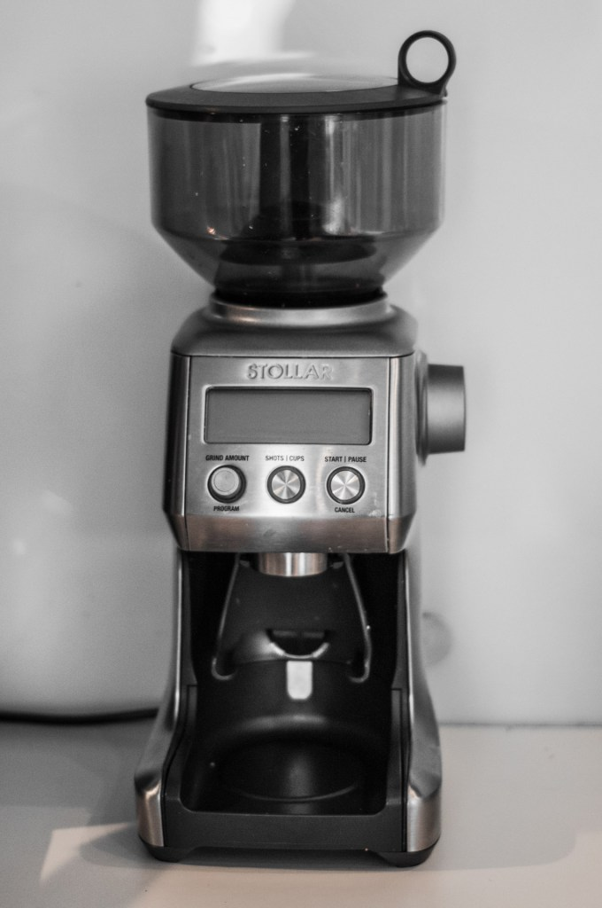
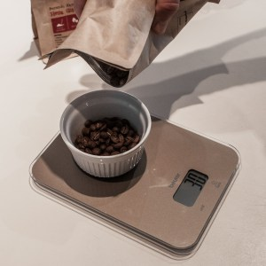
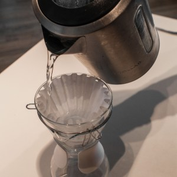
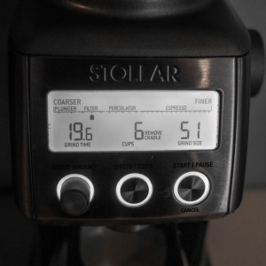
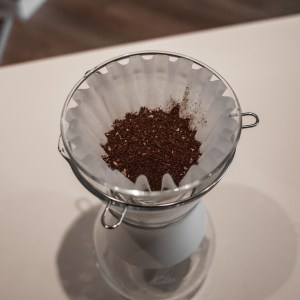
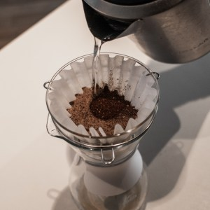
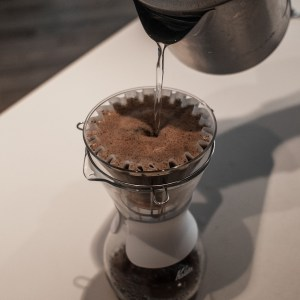
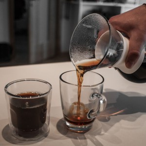

Filtra kafija

Ar kafiju ir tāpat kā ar vīniem - tā ir vesela kultūra ar lielu dažādību, veidiem kā tā tiek audzēta, ievākta, gatavināta, grauzdēta utt. Ir masu produkcija, kuru redzam lielveikalu plauktos, ir tā saucamā “speciality coffee”. Speciality Coffee ir kaut kas vairāk par mārketinga izdomātiem bļembukiem uz iepakojumiem - “Premium Coffee”, “Gourmet” utt. Neiedziļinoties niansēs, kafija, kas nes sev līdzi uzlīmi “speciality coffee” ir vērtēta un atzīta industrijā par labu esam. Tiek vērtētas gan pašas pupiņas, gan garšas īpašības. Izsekojama un pierādāma izcelsme arī ir svarīga - kur audzēta, kā piegādāta grauzdētavai.
Mans personīgais ceļojums kafijas pasaulē sākās ar espresso mašīnas iegādi. Espresso taču ir krutākais kafijas veids, vai ne? To tak gatavo visās smalkākajās kafijotavās un no espresso var pagatovot ļoti dažādas kafijas! Šādu un līdzīgu apsvērumu vadīts es arī iegādājos savu espresso mašīnu.
Iegādājos es Stollar (kas kā izrādās ir tas pats austrāļu Breville, kas Skandināvijā tiek tirgots ar šādu nosaukumu) Infuser BES840.

Toreiz es izvēlējos šādu modeli bez iebūvētām dzirnaviņām. To es neilgi pēc tam nožēloju, jo kafijas malšanai neilgi pirms pagatavošanas ir liela nozīme, kā arī gribās tomēr pašam izvēlēties maluma režīmu atkarībā no kafijas, ko es pagatavoju.
Tad es iegādājos Stollar kafijas dzirnaviņas Smart grinder pro BCG820. Visā visumā esmu ļoti apmierināts. Un tas, ka dzirnaviņas man ir atsevišķi no espresso mašīnas, tagad ir kā bonuss, jo es brūveju jau vairs ne tikai espresso. (Lielāki kafijas eksperti gan ir izteikušies, ka šīm dzirnaviņām ir mīnuss, ka tās mēdz sevī iekšā atstāt kādu pusgramu-gramu kafijas, kas ir īpaši svarīgi receptēs, kur katrs samaltās kafijas grams ir no svara).

Ar espresso mašīnu pārsvarā es brūvēju long espresso (kas principā ir espresso atšķaidīts ar ūdeni) un cortado (kas ir mans mīļākais uz espresso bāzes veidotais kafijas dzēriens). Cortado ir espresso ar viegli putotu pienu attiecībās 1:1. Iesaku visiem pamēģināt, kas tādu vēl nav dzēruši. Tiesa gan, ļoti maz kur tādu ir iespējams dabūt. Daudzās Coffee Inn vai Costa Coffee kafejnīcās baristas parasti nezin kas tas par dzērienu ir. Bet tādās zolīdākās kafijas iestādēs kā Rocket Bean Roastery, Miit un Andritto Gemosā, to pavisam noteikti var dabūt un nogaršot.
Nākamais solis kafijas iepazīšanā man bija kafijas meistarklases apmeklējums Andritto grauzdētavā (tas atrodas tieši pretī Gemoss veikalam uz Mūkusalas ielas). Pirmais pārsteigums bija, ka mums praktiski nemaz nestāstīja par espresso. Pirms tam man likās, ka nu mēs runāsim kā grauzdē pupiņas priekš espresso, kā izvēlēties malumu, daudzumu un citas pagatavošanas nianses. Nē. Mums stāstīja par filtra kafiju (“Drip Coffee” angliski). Par šo kafijas pagatavošanas veidu tad es centīšos mazliet pastāstīt.
Vispirms īsumā, kas tas ir.
Angliski šo pagatavošanas veidu sauc “Drip Brew”. Es neprotu šo terminu iztulkot pareizi, pats es šo metodu saucu par filtra kafiju. :) Patiesībā pagatavošana ir gaužām vienkārša - ir fitra grozs, ir pats filtrs, ir samalta kafija un ir uzvārīts ūdens. Filtri parasti tiek lietoti papīra, bet esot arī metāla. Filtru liek fitra grozā, filtra grozu ar visu filtru liek virsū traukam, kurā tecinās kafiju. Trauks var būt jebkāds, tam lielas nozīmes nav. Var nopirkt filtra grozu un trauku komplektā, kur traukam tilpums ir kādām 5 tasītēm. Var nopirkt vienkārši filtra grozu, kuru var likt virsū kaut vai parastai kafijas krūzei. Tas arī viss - ieberam samaltu kafiju filtrā un tecinam karstu ūdeni. Vienkārši vai ne? Jā, tomēr spēks ir niansēs!
Kafijas pupiņas.
Pasaulē ir divi lielākie kafijas pupiņu veidi - arabika un robusta. Abiem šiem veidiem ir daudz dažādas šķirnes. Arabikai ir labas garšas īpašības, tomēr tās ir uzņēmīgas uz slimībām un kaitēkļiem, tādēļ aug ne visur, kā arī maksā dārgāk. Robusta ir pilnīgs pretstats, tās labi aug, daudz neslimo, bet - negaršo tika labi kā arabika. Re kā iekārtots pasaulē - nevar dabūt visus labumus reizē. :) Robustu lieto pārsvarā šķīstošajās kafijās, espresso un dažādos kafijas maisījumos, jeb vienkāršāk sakot - mazāk kvalitatīvās kafijās. Arabiku savukārt lieto visur, tomēr tā ir dārgāka.
Grauzdēšanu
Dažādām kafijām pupiņas grauzdē dažādi. Espresso tipiski ir stiprais grauzdējums, lai iegūtu espresso raksturīgo rūgto garšu. Kafijām, kuras tiek taisītas bez spiediena, grauzdējums ir vidējs vai viegls.
Kafijas pupiņā ir 3 veida garšas - saldums, skābums, rūgtums. Jo ilgāk pupiņas grauzdē, jo vairāk cukura sadeg. Tas arī izskaidro espresso garšu - skābs un rūgts, jo cukurs pie tāda grauzdējuma jau pārsvarā ir pazudis. Kafijas garšu buķete - “mellenes”, “muskovado”, “karameles” utt. - tas viss patiesībā ir skābes. Pupiņa savukārt šīs skābes iegūst no augsnes, no lietiem, no saules utt.
Pagatavošana
Pagatavojot kafiju, pats galvenais ir laiks, cik ilgi kafija ir saskarsmē ar ūdeni (t.s. - ekstrakcijas laiks). Vispirms iegūst saldumu, tad skābumu un pašās beigās rūgtumu. Un te nu seko galvenā nianse kafijas pagatavošanā - par ātru iztecināsi ūdeni cauri kafijai - dabūsi viegli saldenu dzērienu, turēsi ūdeni par ilgu ar kafiju - iegūsi rūgtu kafiju, kuru bez cukura iedzert ir grūti. Trāpīsi pareizi - iegūsi perfektu saldenskābu dzērienu.
Cik ilgi kafija būs saskarsmē ar ūdeni - filtra kafijās galvenais faktors ir malums (smalks vai rupjš) un kafijas daudzums. Jo smalkāks malums, jo ātrāk izdalīsies cukuri un skābes, jo rupjāks - lēnāk. Smalkākam malumam ūdens tek cauri lēnāk. Tādēļ ir jāatrod pareizais balanss - malumam un daudzumam, lai no kafijas dabūtu ārā pareizās garšas.
Šīs meistarklases apmeklējums man pavēra plašāku skatījumu uz kafiju kā tādu. Es sapratu, ka pasaulē eksistē ne tikai espresso vai latte, ir iespējams pagatavot kardināli savādāku kafiju. Meistarklasē veicām arī Cupping-u, kur garšojām dažādu veidu kafiju, tur arī es pirmo reizi nogaršoju Andritto Kenijas pupiņu grauzdējumu - tā izcēlās ar ļoti spēcīgu garšu. (Grūti noraksturot pašu garšu - tā kā ķirši, tā kā cukurotas mellenes). Loģiskais nākamais solis bija iegādāties “dripperi” un pašam brūvēt filtra kafiju.
Es iegādājos Kalita Glass Wave drippera komplektu

Pro tip: nelietojiet komplektā esošos tumšā papīru filtrus - izteikta papīra garša kafijai. Pērciet atsevišķi.
Recepte
Recepte, ko es lietoju pilnam Kalita traukam kafijas (~ 5 tasītes) - 30g svaigi maltas kafijas, “Filter 51” malums uz Stollar Grinder Pro.
- Uzvāram ~ 1.0 L ūdens, lai pietiktu gan filtra saslapināšanai un trauka uzkarsēšanai, gan arī pašai kafijai
Kamēr vārās ūdens, nosveram 30g pupiņas

- Kad ūdens ir uzvārījies, aplejam ielikto papīra filtru ar ūdeni, lai tas samirkst. Kā arī pie reizes uzsildam kafijas trauku

- Ieberam nosvērtās kafijas pupiņas dzirnaviņās un samaļam izvēlētajā rupjumā, ieberam samalto kafiju filtrā


- Sākotnējā uzliešana - ielejam ūdeni tikai tik daudz, lai tas knapi apņem kafiju. Gaidam ~40sek. Šādi no kafijas izdalās “sliktās” gāzes.

- Lēnām ar apļveida kustībām pielejam ūdeni. Pagaidam kad nokrītās un atkārtojam kamēr trauks pilns.

- lejam tasītēs un baudam 😃

Ideāli kafijas brūvēsanai (sākot ar sākotnējo uzliešanu) ir jāaizņem 3:00 - 3:30 minūtes. Ja nesanāk iekļauties, tad visdrīzāk ir jāmaina malums - ja par ātru, tad smalkāk, ja par lēnu - tad rupjāk.
Ūdens dozēšana man vēl ir jāizkopj, es šobrīd to daru “uz aci”. Pareizāk būtu likt uz svariem un mērīt cik gramus ūdens kurā brīdī uzlej. Kā arī vajadzētu īpašo ūdens kanniņu ar tievu garu snīpi, lai varētu precīzāk apliet. Tā kā - ir vieta izaugsmei 😃
Noteikti iesaku nogaršot vairākas kafijas pupiņas - es pats līdz šim esmu pamēģinājis dažādus Andritto grauzdētavas un Rocket Bean Roastery grauzdējumus. Līdz šim favorīts ir manis jau pieminētais Andritto Kenijas vidējais grauzdējums (iepakojumu diemžēl neesmu saglabājis).
Par kafijas garšu - tas ir ļoti subjektīvi. Mēs visi esam dzēruši kafiju visu mūžu aplejot krūzītē iebērtu lielveikalā pirktu kafiju. Un mums liekas, ka mēs zinam “kā kafijai ir jāgaršo”. Daudziem, man tai skaitā sākumā, likās, ka šādi caur filtru izlieta kafija garšo pliekani, nav “īstās” kafijas garšas. Tomēr šī “īstā” kafijas garša, pie kā esam vienkārši pieraduši, ir dēļ tā rūgtuma, ko mēs iegūstam kā blakusefektu kafijai esot par ilgu saskarsmē ar ūdeni, vai arī izplatītā espresso metode ar stipri nograuzdētām pupiņām. Tas ir tāpat kā ar vīnu - cilvēkam, kas visu mūžu ir dzēris tikai “Kagor” vai saldos Gruzijas vīnus, jebkāds izsmalcināts franču Bordeaux vai Pinot Noir šķiet nedzerams.
Nav pareizās vai nepareizās pagatavošanas metodes, nav pareizā vai nepareizā garša - katram ir savas garšu preferences. Turklāt tai pašā Etiopijā (kas tiek uzskatīta par kafijas kā dzēriena dzimteni) kafiju taisa pupiņas nograuzdējot uz pannas, ar rungu sastampājot un to visu vārot kastrolītī, kas pēc mūsu standartiem ir diezgan tālu no kafijas kādu mēs to pazīstam.
P.S. Kredīts par uzņemtajām superīgajām bildēm un to apstrādi - goes to Aivis!